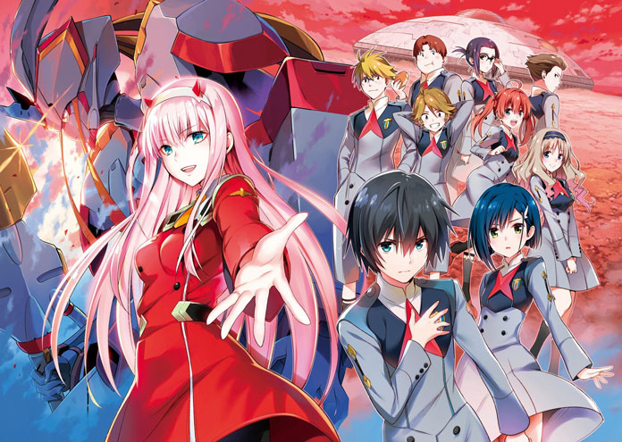

About Zero Two
Zero Two is an artificially-created life form who aspires to become fully human, and an elite pilot with an infamous reputation as the "partner killer".
Zero Two and her friends
Characteristics
- She used to keep to herself
- She used to be feared by her fellow pilots
- She is trying to become human
Zero Two's Friends
Zero Two's friends are the pilot's from squad 13, Hiro who is also her 'darling' is probably also her best friend. Click on the links to read more about them: